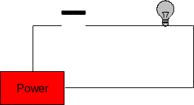
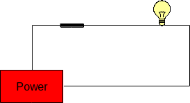
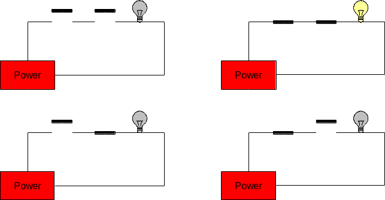
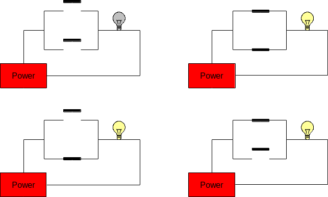

Fundamentals of Digital Logic
Becoming really good at computer science means having a good understanding of all of the layers, what they do, and how they are used. We will spend most of this lesson dealing with the hardware layer. A lot of devices have two states: a voltage is high or low, a switch is open or closed, a light is on or off. There are many ways of modeling these two-state systems; some are very concrete and some are more abstract. We’ll look at a number of these models, beginning with simple models that are based on mechanical switches and light bulbs.
One of the most basic electrical connection is a light bulb that is either connected to a power source (or not). A slightly more complicated version of this includes a switch that can be either open or closed. These switches are similar to the electrical switches in your home. We will assume that these switches are connected to a source of power that can supply current. The potential of a power source, such as a battery, is called voltage and is measured in units called volts (V). Voltage sources typically have a positive and negative end (called a terminal), and the difference in the potential between both terminals is what we use as the measurement of voltage.
Voltage sources can produce either alternating current (AC) or direct current (DC). With DC, one terminal is always positive, and the other is always negative. Examples of DC sources are batteries such as the ones you would put in a small radio, watch, or flashlight. With AC, the two terminals keep on swapping positive and negative roles very quickly (60 times per second!). Examples of AC sources are wall outlets that you would typically find in your home.
A Simple Circuit with a Switch
The simplest circuit that can be built contains a power supply, a single switch, and a light bulb. If the switch is open, the light is off; if the switch is closed, the light is on. The following figure illustrates both of these cases:


The state of these two circuits can be expressed in table form as follows:
| Switch | Light |
|---|---|
| Open | Off |
| Closed | On |
Two Switches in Series
We can increase the complexity of this circuit somewhat by adding a second switch between the first switch and the light bulb. This results in four possible configurations:
- both switches are open;
- the first switch is open and the second is closed;
- the first switch is closed and the second is open; and
- both switches are closed.
This is illustrated in the figure below.

These circuits are called series circuits since the two switches occur on the same path from the power source back to itself. In series circuits, when either one or both of the switches are open power will not flow, and the light bulb will be off. Only when both switches are closed does power flow, and the light bulb illuminates. Said another way: if both switch A and switch B are closed, then the light will turn on.
The relationship between the states of the two switches (open or closed) and the state of the light bulb (on or off) is summarized in the following table:
| Switch A | Switch B | Light |
|---|---|---|
| Open | Open | Off |
| Open | Closed | Off |
| Closed | Open | Off |
| Closed | Closed | On |
Two Switches in Parellel
Another type of circuit can be designed using two switches. This second type of circuit arranges the switches in parallel rather than in series. In a two-switch parallel circuit, each of the switches is placed on a separate path between the power source and the light bulb. The figure below illustrates the four possible configurations of a two-switch parallel circuit. As was the case with the series circuits, there are four possible configurations of the circuit (in fact, they are exactly the same as before). When both switches are open power does not flow and the light bulb is off. However, whenever either or both of the switches are closed, power flows and the light will turn on. Said another way, if switch A or switch B is closed, then the light will turn on.

The relationship between the states of the two switches (open or closed) and the state of the light bulb (on or off) is summarized in the following table:
| Switch A | Switch B | Light |
|---|---|---|
| Open | Open | Off |
| Open | Closed | On |
| Closed | Open | On |
| Closed | Closed | On |
More complex circuits with three or more switches are possible!